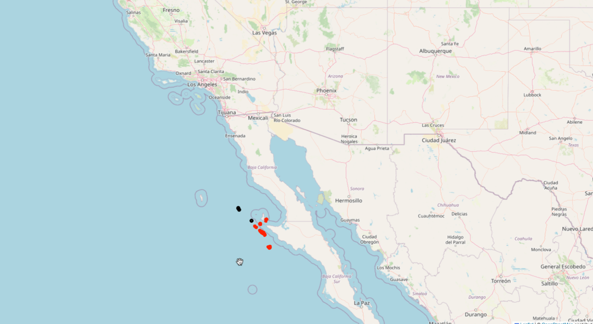
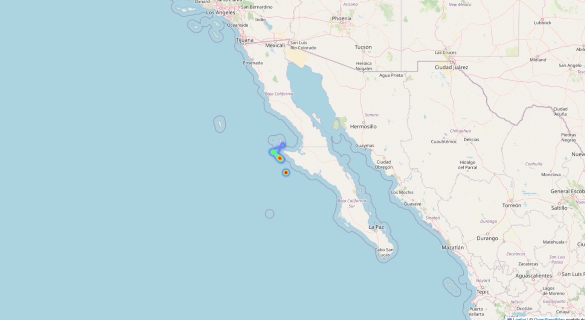

Personal Portfolio
Hi, I'm Fateme Ghorbani.
Computer Science graduate with professional software development experience and hands-on experience in data analysis, analytics tracking, and machine learning. I enjoy solving real-world problems through analytical thinking and technical skills.
About Me
I combine a Computer Science background with professional software development experience and academic projects. I am interested in exploring data, solving practical problems, and turning findings into useful insights.
Technical Skills
Selected Projects
Discovering Smuggling Ports and Unconventional POIs Using Machine Learning
Project Overview
This bachelor's thesis explores the use of unsupervised machine learning to identify unusual vessel activity and discover unconventional Points of Interest (POIs) using Automatic Identification System (AIS) data. The goal was to identify geographic patterns that may warrant further investigation, rather than to confirm illegal activities.
Dataset and Study Area
The project used AIS vessel tracking data obtained from the U.S. MarineCadastre database. The analyzed records covered the period from December 31, 2020, to March 28, 2021, within a selected area of the Pacific Ocean.
- Initial dataset: 385,560 records
- After initial filtering: 304,988 records
- After handling missing values and preparing selected attributes: 304,788 records across 18 columns
- After outlier removal: 142,649 records across 18 columns
Data Preprocessing
Data preprocessing included removing unnecessary identifying attributes, handling missing values, creating indicators for missing data, and detecting statistical and logical outliers. These steps prepared the vessel tracking data for spatial analysis and clustering.
Methodology
The project applied HDBSCAN, a density-based unsupervised clustering algorithm, to vessel positions. The analysis focused on records with a Speed Over Ground (SOG) below 5 knots. Latitude and longitude coordinates were standardized before clustering, with a minimum cluster size of 10.
The algorithm grouped spatially dense observations and labeled points that did not fit any cluster as noise. These noise points were examined as potential unconventional POIs for further investigation.
Visualizations
Interactive geographic visualizations were created to explore the spatial distribution of vessel observations, detected clusters, and noise points. A heatmap was also generated to visualize the geographic distribution of clustered observations.


Tools and Technologies
Python, Pandas, NumPy, Matplotlib, Seaborn, Scikit-learn, HDBSCAN, Folium
Key Takeaway
This project demonstrates how unsupervised machine learning and geospatial visualization can support the exploration of unusual vessel activity in AIS data. The detected patterns are exploratory findings and do not, on their own, establish smuggling or other illegal activity.
Call Center Analysis
Analyzing call outcomes, queues, contact reasons, and operational metrics using Python and Pandas.
Tools: Python · Pandas · Data Analysis
Sales Analysis
Exploring sales performance, average order value, regional revenue, and product category contribution.
Focus: Business Analytics
Fashion MNIST Classification
An image classification project using an artificial neural network and the Fashion MNIST dataset.
View project on GitHub →Experience
Junior Frontend Developer · Takhfifan
Dec 2023 – Dec 2024
Developed and maintained analytics tracking scripts across more than 180 vendor websites, coordinated integrations with vendors, and investigated tracking issues and data discrepancies. Also contributed to a reusable UI design system.
Education
B.Sc. in Computer Science
Alzahra University · Oct 2021 – Oct 2025
Final GPA: 16.50/20